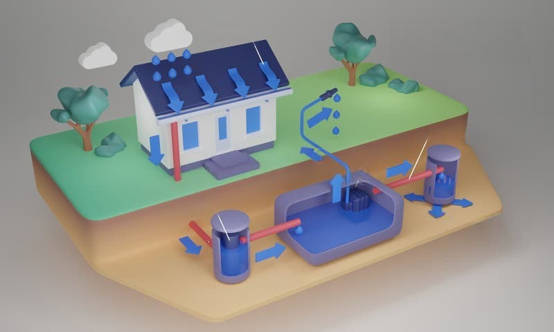
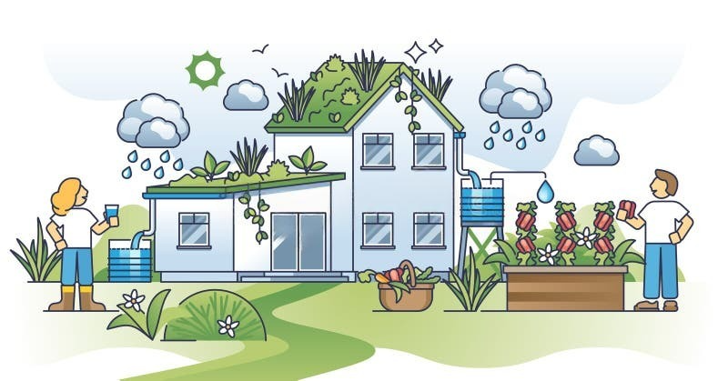

Rainwater harvesting is the technique of collecting and storing rainwater for future use. This sustainable practice helps in conserving water, reducing water bills, and replenishing groundwater levels.

Rainwater harvesting is the technique of collecting and storing rainwater for future use. This sustainable practice helps in conserving water, reducing water bills, and replenishing groundwater levels.
Rainwater harvesting is the process of collecting and storing rainwater for later use, promoting water conservation and sustainability
It reduces water scarcity, lowers water bills, and helps maintain the water table.
Rainwater can be used for irrigation, washing, and even drinking after proper filtration.
The ease of implementation depends on the complexity of the task and the resources available, but with proper planning and tools, many projects can be executed efficiently./
